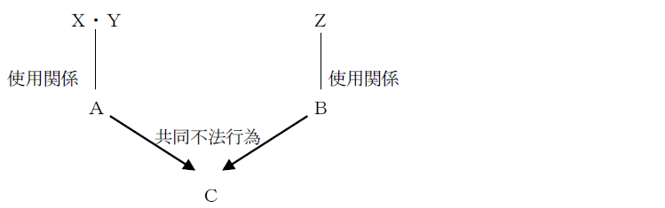

第４節 特殊の不法行為
一般不法行為（709条）の成立要件と異なる特殊の要件によって成立する不法行為を特殊の不法行為という。民法上には、責任無能力者の監督義務者等の責任（714条）、使用者等の責任（715条）、土地の工作物等の占有者及び所有者の責任（717条）、動物の占有者等の責任（718条）がある。
Ⅰ 責任無能力者の監督義務者等の責任
責任無能力者の監督義務者の責任（714条）とは、712条又は713条により責任無能力者が責任を負わない場合に、この監督義務を負う者及び監督義務者に代わって責任無能力者を監督する者が、責任無能力者が第三者に加えた損害を賠償するものである。
714条の責任の趣旨は、監督義務者には、責任無能力者が社会生活を送るについて保護・監督すべき義務があるにもかかわらず、その監督義務を十分に尽くさなかったために生じた加害行為につき、監督義務者の責任を認めることによって被害者の救済を図ろうとするところにある。
1. 責任無能力者の行為が、責任能力を除く一般不法行為（709条）の要件を具備していること（要件①）。
本人の行為が責任無能力以外の理由によって、不法行為を構成しないものとされる場合には（例えば、正当防衛等その行為が違法性を欠く場合）、714条の監督義務者の責任も問題となり得ない（最判昭37.２.27）。
2. 行為者本人が責任を負わないこと（要件②）。
行為者に責任能力があればその者が賠償責任を負う（709条）ことになり、714条の適用はない。
3. 監督義務者がその義務を怠らなかったことの立証がないこと（要件③）。
この立証責任は監督義務者にある（大判昭18.４.９）。
責任無能力者の違法な加害行為が存在するということは、これを監督する者の監督が不十分とみて立証責任を転換し、監督義務者に反証による免責の機会を与えるものである。
これによって、監督義務者に容易に責任を負わせることができ、被害者の救済になる。
4. 監督義務を怠らなくても損害が生ずべきであったことの立証がないこと（要件④）。
要件③と同様に、この立証責任は監督義務者側にある。
法定の監督義務者又は代理監督者が責任無能力者の行為について損害賠償責任を負う。
監督義務者：親権者（820条）、未成年後見人（857条）、成年後見人（858条）
代理監督者：託児所・幼稚園の保母、小学校の教員等
また、代理監督者が責任を負う場合であっても、監督義務者が、その者に付託したことにつき過失のないことを立証しない限り、監督義務者も同時に責任を負う。この場合の両者の責任は、不真正連帯債務となると解されている。
Ｑ 行為者本人が責任能力を有する場合、監督義務者は714条の責任を負わない。ではこの場合、監督義務者は714条の反対解釈により常に責任を免れるのか、それとも709条の責任を負う場合があるのか。これは、714条が709条といかなる関係に立つのかという問題である。
→ 併存責任説（最判昭49.３.22・通説）
未成年者が責任能力を有する場合であっても、監督義務者の義務違反と当該未成年者の不法行為によって生じた結果との間に相当因果関係を認めることができるときは、監督義務者につき709条に基づく不法行為が成立する。
Ⅱ 使用者責任
使用者責任とは、被用者が事業の執行について第三者に損害を加えた場合に、使用者が負う損害賠償責任をいう（715条１項）。
使用者は、他人を使用することによって利益を得る可能性があるにもかかわらず、それによる損害の賠償を負担しないのは不公平であるという「報償責任の原理」から認められた責任と解されている（通説）。
なお、使用者に代わって事業を監督する者（代理監督者）も同様の責任を負う（715条２項）。
1. 使用関係－「ある事業のために他人を使用」していること（要件①）
「事業」とは、企業活動である必要はない。日常的に仕事と呼ばれるほどのものであれば、すべて「事業」に含まれる（ex. 庭の手入れ）。営利性、有償性、継続性はすべて不要である。
2. 「事業の執行について」なされたこと（要件②）
この要件は、報償責任の原理から、責任の範囲を使用者が被用者の活動により利益を得ている範囲に限定するためにある。
具体的には、(1)その行為が使用者の事業に含まれていることと、(2)その行為が被用者の担当している職務に含まれていることが必要である。
※ 被用者の職務の範囲
職務の範囲内かどうかは、厳密には使用者と被用者の内部関係で定まるものである。しかし、内部関係により「事業の執行について」に当たるかどうかが決められてしまうとすれば、被害者側には知ることができない事情により使用者責任が問えるかどうかが決まってしまうことになり、被害者の保護に欠ける結果となってしまう。そこで、不法行為法の理念である被害者保護の見地からは、内部関係にとらわれない基準が必要である。
※ 外形標準説（判例）
「事業の執行について」とは、被用者の職務執行行為そのものには属しないが、その行為の外形から観察して、被用者の職務の範囲内の行為に属するものとみられる場合をも包含する（最判昭40.11.30）。
もっとも、被用者の職務の範囲外であることについて相手方に悪意又は重過失ある場合には、本条の適用はない（最判昭42.11.２）。
3. 被用者が第三者に損害を加えたこと（要件③）
ここにいう「第三者」とは、加害者と使用者を除くすべての者をいい、被害者も被用者で、加害者とは業務執行の共同担当者であり、しかも当人にも事故発生について過失があるという場合でも、使用者は本条による責任を免れない（最判昭32.４.30）。
4. 使用者が免責事由を立証しないこと（要件④）
使用者は選任及び監督に相当の注意を払っていたこと（双方の立証が必要）、又は相当の注意をしても損害が生ずべきであったことを立証すれば免責される。もっとも、この立証に成功することはほとんどない。
1. 使用者の損害賠償責任
この場合、被用者自身は709条による損害賠償責任を負う。
Ｑ 使用者責任と被用者の責任とはいかなる関係にあるか。
→ 不真正連帯債務説（最判昭46.９.30・通説）
2. 求償権
(1) 趣旨（715条３項）
使用者又は代理監督者が715条１項に基づいて賠償責任を果した場合には、これらの者は被用者に求償することができる（715条３項）。
使用者責任は被害者保護のために報償責任の原理から特に使用者に賠償責任を課したものであるから、使用者が賠償した場合は被用者にその額を求償できるとした。
(2) 求償権の制限
Ｑ 被用者の不法行為について使用者にも一定の帰責事由がある場合には、使用者の全額求償を認めることは被用者に酷である。そこで、使用者の求償権を制限することができるのかが問題となる。
→ 制限することができる（最判昭51.７.８・通説）。
（理由）
被用者を使用することにより多大な利益を上げている使用者が、生じた損害の全部を被用者に転嫁することは信義誠実の原則（１条２項）に反する。
(3) 複数の使用者間における求償関係
＜判例＞ 最判平3.10.25

使用者の一方は、当該加害者の過失割合に従って定められる負担部分のうち、右の責任の割合に従って定められる自己の負担部分を超えて損害を賠償したときは、その超える部分につき、使用者の他方に対して負担部分の限度で求償することができる。
法人法78条は、代表機関が職務行為について第三者に損害を与えた場合には、法人自身がその賠償責任を負うことを定める。
1. 要件
(1) 法人の代表機関の行為であること
代表機関でない被用者の行為については、法人は715条の使用者責任を負う。
(2) その行為が不法行為（709条以下）の要件を備えていること
(3) 職務を行うについて他人に損害を加えたこと
「職務を行うについて」の判断基準は、外形標準説（大判大７.３.27、最判昭41.６.21）をとる。
外形上職務に属する行為の他、職務行為と適当な牽連関係に立つ行為も含む。そして、職務行為かどうかは客観的に行為の外形から判断されなければならない。
ただし、当該行為が職務行為に属さないことを相手方が知っていたか、又はこれを知らないことにつき重大な過失があったときは、法人は責任を負わない（最判昭50.7.14）。
2. 効果
(1) 法人の賠償責任
法人は理事が第三者に与えた損害を賠償する義務を負う。
(2) 理事の個人責任
法人が不法行為責任を負う場合、機関個人も不法行為責任（709条）を負うことに争いはない（法人と不真正連帯債務を負う）。
Ⅲ 注文者の責任
請負人がその仕事について第三者に損害を加えても、注文者は原則としてその損害を賠償する責任を負わない（716条）。もっとも、注文者が請負人に対してした注文又は指図に過失があったときは責任を負う（同条ただし書）。
注文者の責任を問うためには、請負人につき不法行為が成立することが必要である。
Ⅳ 土地工作物責任
土地の工作物の設置又は保存に瑕疵があることによって他人に損害が生じたときは、第１次的には工作物の占有者が、占有者が損害の発生を防止するのに必要な注意をしたときは第２次的に所有者が負う責任である（717条１項）。
１次的：占有者（過失責任）
２次的：所有者（無過失責任）
①土地の工作物に設置又は保存の瑕疵があること、②損害が土地の工作物の瑕疵に起因すること、が必要である。
土地の工作物とは、土地に接着して築造された設備をいい、建物、橋、トンネル、電柱、石垣は、「土地の工作物」に当たるが、工場内の機械は土地の工作物とはいえない（大判大元.12.６）。
第１次的に占有者が損害賠償責任を、占有者が損害発生防止に必要な注意をしたことを立証したときは第２次的に所有者が損害賠償責任を負う（717条１項）。
損害の原因について他にその責任を負う者があるときは、占有者又は所有者は、その者に対して求償権を行使することができる（717条３項）。
Ⅵ 共同不法行為
数人の者が共同の不法行為によって他人に損害を加えたとき、及び共同行為者のうち誰が実際に損害を加えたか明らかでないときは、それぞれの行為者が、生じた損害について連帯して責任を負う（719条１項）。
共同不法行為者に、損害全部についての責任を負わせることで被害者救済を図るものである。
1. 意義
狭義の共同不法行為とは、共同者全員がいずれも損害の発生に加担している場合をいう。
ex. 数人が共同して殴打した
2. 成立要件
①各人の行為がそれぞれ独立して不法行為の要件を備えていること、②各行為者の間に関連共同性があること、が必要である。
1. 責任の連帯性
共同不法行為者は、各自が連帯して賠償責任を負う。436条は、「法令の規定」による連帯債務も含めて規律していることから、共同不法行為の場合にも、原則として連帯債務に関する規定が適用される（最判昭57.３.４・通説）。
2. 賠償の範囲
共同不法行為者は、それぞれ、共同不法行為と相当因果関係にある全損害について責任を負う。
3. 過失相殺
Ｑ１ 交通事故の被害者が医師の過失により被害を拡大するに至ったときに、交通事故の加害者の責任と医師の責任との関係
→ 交通事故とその後の医療事故とのいずれもが被害者の死亡という不可分の１個の結果を招来し、この結果については相当因果関係にあるときは、両者は共同不法行為に当たるから、各不法行為者は被害者の被った損害の全額について連帯して責任を負うべきであり、この共同不法行為における過失相殺は、各不法行為の加害者と被害者との間における過失の割合に応じてすべきであるとした判例がある（最判平13.３.13）。
Ｑ２ 複数の加害者の過失及び被害者の過失が競合する場合の過失相殺の可否
→ 複数の加害者の過失及び被害者の過失が競合する一つの交通事故において、その交通事故の原因となったすべての過失の割合（以下「絶対的過失割合」という。）を認定することができるときには、絶対的過失割合に基づく被害者の過失による過失相殺をした損害賠償額について、加害者らは連帯して共同不法行為に基づく賠償責任を負うものと解すべきである。これに反し、各加害者と被害者との関係ごとにその間の過失の割合に応じて相対的に過失相殺をすることは、被害者が共同不法行為者のいずれからも全額の損害賠償を受けられるとすることによって被害者保護を図ろうとする719条の趣旨に反することになる（最判平15.７.11）。